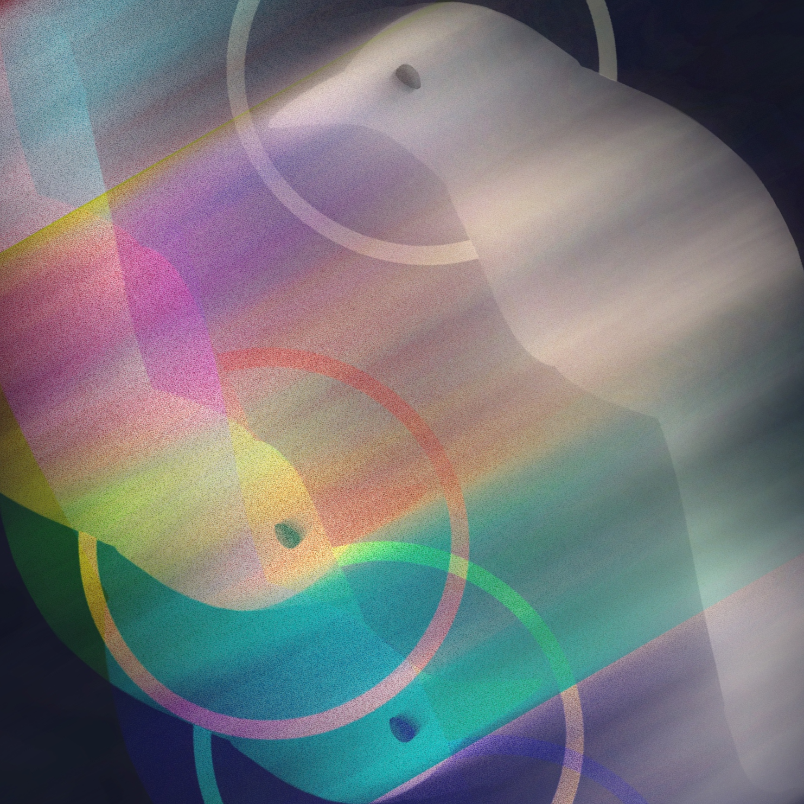

let me ask you this, my friend:
when the porch lights all go out
will there be a place to stand
watch babylon come tumbling down?
i've been waiting patiently
camping out at god's front door
guess that's where you'll bury me
yeah who'd he ever open for?
why you?
why now?
every little step stone i've
tip toed and turned over
is piled up inside of my
head
beast of ages pulled apart
laying every tendril bare
does it even have a heart
tell me what'd you find in there?
what do you know?
it's not true
sycamores
embers in my grin
if it's all for nothing
ain't it everything
to you
who knew?
every little step stone i've
tip toed and turned over
is piled up on top of of my
head